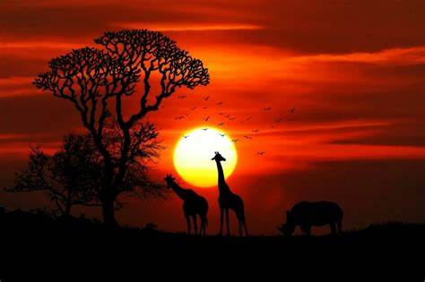
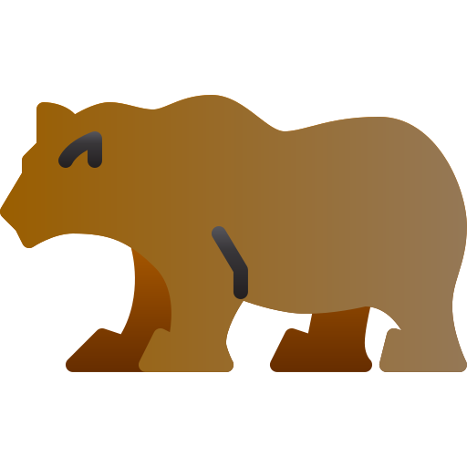

Todos los animales y seres vivos se reproducen de alguna manera pero todos de diferente manera. Hay algunos que se reproducen asexuales y otros que se reproducen sexualmente. Los Asexuales son los que se reproducen por si solos y los sexuales son con otra misma especie. Los Asexuales son normalmete las plantas y ongos. Las sexuales son como los animales.
Lifeder Educación.2020
Este video habla del reino-animal y sus caracteristicas
top 10 animales
13/11/21
leon
rata
elefante
pantera
pez
perro
gato
tigre
oso
chango
los animales solo se pueden definir mejor por como sobreviven en la naturaleza pero eso no evita la comparacion de que pasaria de dos de estos se encontraran juntos de eso la lista de para mi quien ganaria de todos ellos
El Reino de Animalia, también conocido como Metazoo, es un gran grupo de criaturas que son
animales, entre los que encontramos a los humanos. La palabra animal proviene del latín animalis, que
significa "respirar aire" y "tener alma".
Reproducción
En la mayoría de los casos, los animales se reproducen sexualmente. Esto significa que hay dos diferencias de género:
masculino y femenino. La ventaja de este método de reproducción es que permite la variación genética, pero tiene la
desventaja de que el proceso es muy lento, porque se necesita energía para encontrar pareja sexual, iniciar el cortejo,
luchar por ella si es necesario y tener relaciones sexuales. Hay algunos animales que se reproducen asexualmente, como las
esponjas o los gusanos, que pueden reproducirse por dicotomía, dividiéndose en dos y creando uno nuevo a partir del original.
Especies
El reino animal está formado por más de 2 millones de especies biológicas divididas en más de
30 filos, que sirven para clasificar toda esta biodiversidad.
Como pueden ver va ganar el de menos potencia pero con mejores llanta ya que en la tierra
puedes otener mejor traccion con gajos grandes.

Concepto. (2013). Reino Animal - Concepto, origen, características y ejemplos.
[online] Available at: https://concepto.de/reino-animal/ [Accessed 9 Feb. 2022].
investigacion semana 8
13/11/21
supervivencia de los animales
Para cualquier animal, su máxima prioridad es obtener el alimento necesario para subsistir, así como, a la vez, evitar ser comido por un depredador que esté un escalón más arriba que él en la pirámide alimenticia. En el mundo de la selva, en el salvaje, hay que ser ágil corriendo, rápido volando, bueno escondiéndote, hábil nadando y con capacidad de mantener siempre un ojo abierto que advierta de los peligros.
Aun así, esto no es fácil, y no siempre se consigue sobrevivir a pesar de todo. Y aunque se consiga una vez, nunca se sabe cuándo será la siguiente, y cuál será su desenlace.
zorro en nieve
El instinto de supervivencia es como un clic que salta ante las situaciones más adversas, y que despierta toda el ingenio del animal con el fin de salvar su vida. Todos parecen comportarse de una forma constante, como si estuvieran programados para actuar de manera automática. Esto es lo que se denomina el instinto de supervivencia.
conductas instintivas
Bebés sin madre. En muchas ocasiones hemos visto cómo animales de muy distintas especies se han comportado como madre e hijo. Esta es una acción instintiva por parte del bebé a sobrevivir. Se ve solo en el mundo, sin una madre protectora, y acepta a cualquiera que lo haga sentir seguro.
video animal planet
13/11/21
video de animal planet
Emilio Gama Muñoz
video sobre los animales presentado por animal planet
investigacion semana 9
13/11/21
metodos de caza de los animales
Hay dos tipos de animales que usan la caza. Estos son los depredadores que usan a otros para poder seguir viviendo alimentándose de ellos.
Y luego están los supredepredadores. Estos subsisten por encima de los depredadores. Son conocidos como los reyes del mundo animal. Como ya habrás podido imaginar, en estos se incluye el león, el tigre o el jaguar.
El éxito de la caza lo determinan varios factores, como, por ejemplo, el tamaño del depredador en proporción al de la presa, o la velocidad que pueda alcanzar uno u otro. Por ello, muchos animales cazan en manadas, como puede ser el caso de la hiena, el lobo o el león. Otros, como el tigre, el oso o el gato montés, prefieren hacerlo por su cuenta.
tecnicas de caza
El acecho. Quedarse escondido y vigilante esperando a que la presa se aproxime y se despiste al máximo es la técnica preferida por el tigre o el gato montés. Una vez que la víctima está en ese punto, se lanzan sobre ella y la despedazan en trozos en una lucha sin tregua que, por norma general, siempre ganará el depredador.
Persecución.
El lobo, por ejemplo, elige esta técnica de caza como su preferida. No le gustan los rodeos ni perder el tiempo. Por ello, cuando ve una posible presa, se lanza tras ella. No desiste hasta cogerla, aunque en ocasiones, si la presa es más veloz o tiene mayor resistencia, las cosas se le podrían poner complicadas al depredador.
fauna marina
10/05/22
peces
Dentro de la fauna marina destacan por el número, abundancia y tamaño los siguientes grupos: Peces, Moluscos, Artrópodos (diferentes tipos de cangrejos, langostas, camarones, etc.) y Cnidarios (aguas vivas, corales, anémonas). Son también abundantes los Anélidos (gusanos marinos) y Equinodermos (erizos, estrellas y holoturias). Los Quelonios (Tortugas) y unas 26 especies de Mamíferos marinos (cachalotes, delfines o toninas, calderones, etc.).
caballos
meros y chernas
Hay tres clases de peces: La Agnatha, la Chondrichthyes y la Osteichthyes. La más primitiva de las tres clases es la de los peces sin mandíbula, (la Agnatha). Los tiburones y las mantas (rayas), constituyen la clase Chondrichthyes. La clase más numerosa, es la Osterichthyes. Los peces de esta clase tienen un esqueleto hecho, casi totalmente, de hues
Principalmente se alimentan de noche. Hay alimentadores de zooplancton pero la mayoría son cazadores de emboscada alimentándose de peces y crustáceos. Grupo explotado comercialmente.
Pargos (Lujanidae) Grupo principalmente de depredadores. La mayoría piscívoros algunos se alimentan de crustáceos e invertebrados. Muy pocos son planctívoros. Especie utilizada para la alimentación. La mayoría se localiza en arrecifes.
 reproducción
reproducción top 10 animales
top 10 animales paginas de referencia
paginas de referencia
 investigacion
investigacion
 video animal planet
video animal planet
 fauna marina
fauna marina